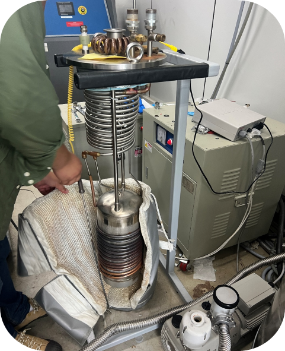

DGIST 물리화학부 Novel Quantum materials Laboratory
학부 연구생
*팀원: 염정현
*본인 역할: 학부 연구생 FeGaTe 스핀트로닉스 소자 연구
*결과 : 인턴 수료 완료
인턴 관련 내용
스핀트로닉스란?
스핀트로닉스란 스핀을 이용한 일렉트로닉스이다. 기존의 일
렉트로닉스는 전자의 전하를 이용하는 것인 데 반해서 스핀트로닉스는 전자의 스핀을
이용한 일렉트로닉스이다. 전하를 사용하는 경우에는 전하가 이동하면서 흐르는 전류에 의한 열
발생이 일어난다. 이러한 열발생은 집적회로가 고밀도화되면서 큰 문제를 일으키고 있다. 전하 대
신 정보 저장 및 처리의 기본 단위로서 스핀을 사용한다면, 전류 흐름에 의해 발생하는 열발생을
없앨 수 있고, 따라서 좀더 효율적으로 에너지를 사용하는 친환경적인 일렉트로닉스를 구현할 가능성이 있다. 즉, 바이너리 스위치 소자나 전자 논리 게이트, 컴퓨터 아키텍처
구조에 응용 가능하다.
2023년 DGIST 하계 대학원 인턴으로 선발되어, 한달간 스핀트로닉스 소자 개발 및 물성 연구 진행.

연구실 관련 발표 자료